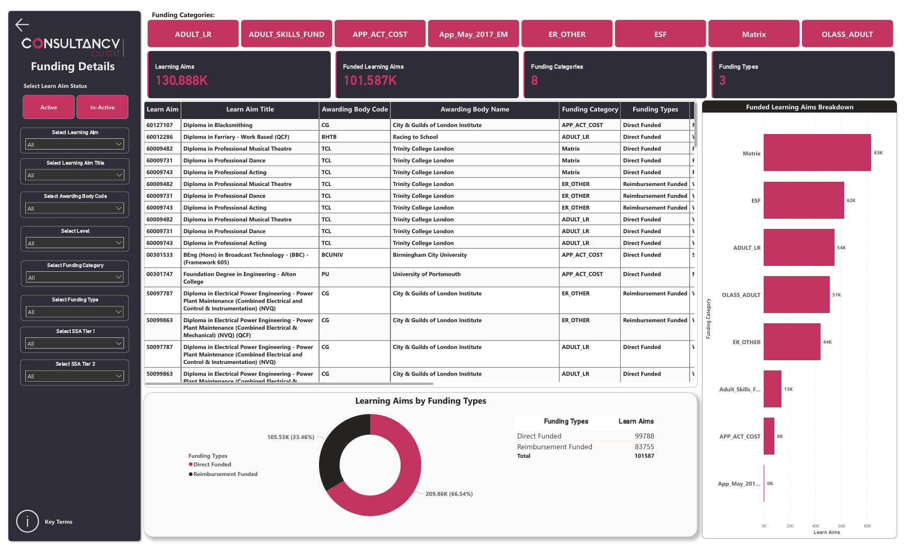
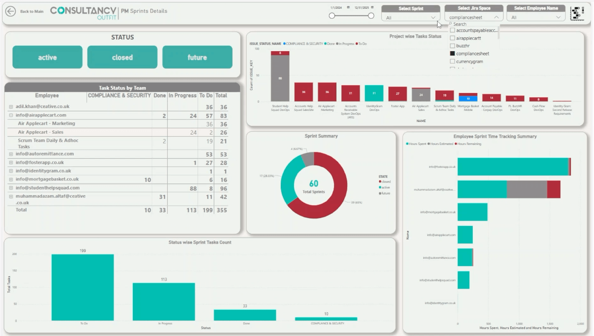
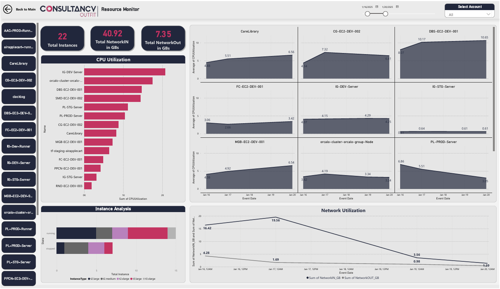
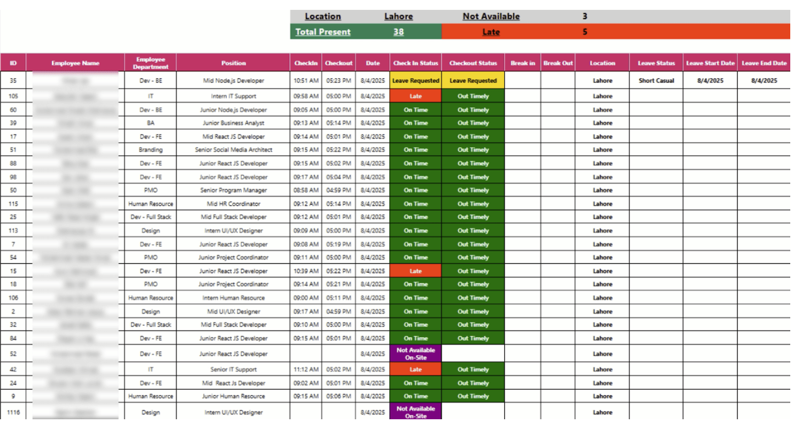
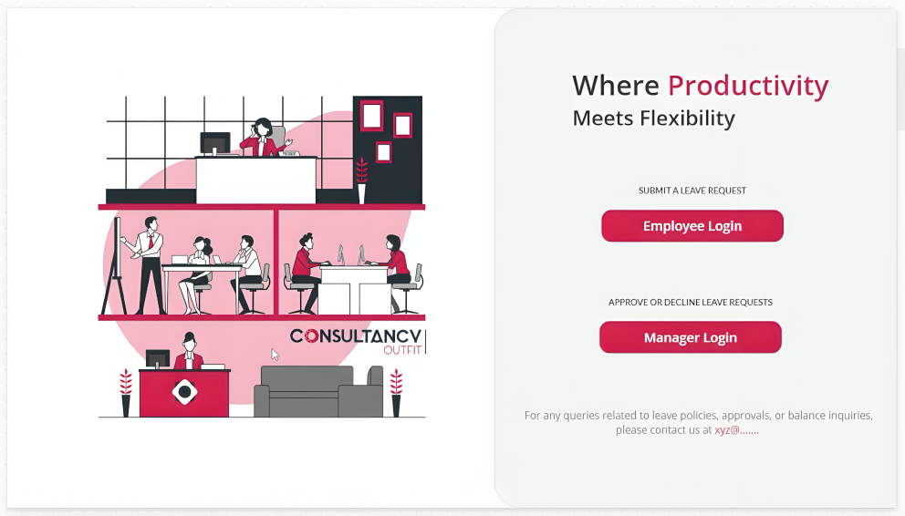
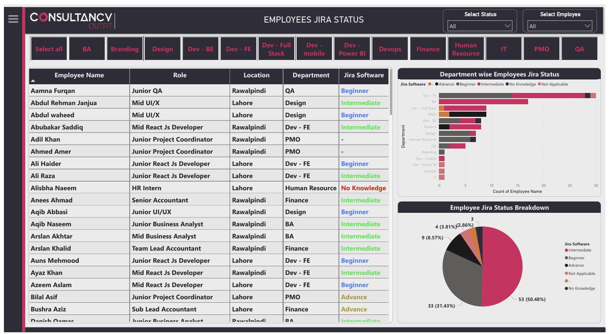

Power BI
Dashboards your team actually uses — with self-service drill-downs, real-time KPIs, and DAX models that handle millions of rows without slowing down.
Power BI Developer · Data Engineer · Automation Specialist
I build enterprise data solutions that turn raw data into automated decisions. Delivered BI systems for multiple departments — from ETL pipelines to AI-powered dashboards.
How I Help
Dashboards your team actually uses — with self-service drill-downs, real-time KPIs, and DAX models that handle millions of rows without slowing down.
Custom apps that replace spreadsheets and paper trails — with multi-step approvals, real-time sync, and integrations that actually work across your stack.
Reliable data flows that pull from APIs, databases, and files — clean it, transform it, and land it where your BI tools can actually use it. No more manual exports.
Scheduled jobs and workflows that run while you sleep — from report generation to email alerts to cross-system syncing. Built with Python, n8n, or Power Automate.
Featured Work
Drag to rotate & move • Click to view details

An enterprise chatbot that answers natural-language questions about courses, enrollments, and performance — by routing between SQL queries and vector search. Built on a 40-table galaxy schema with Azure OpenAI.

One dashboard, five departments. Pulls from Jira, GitHub, Time Doctor, and MongoDB into a single BI source — with row-level security so each team sees exactly what they should.

Tracks infrastructure health, CI/CD performance, and cloud spend across multiple AWS accounts — with automated Python ETL and CloudTrail auditing feeding into live Power BI reports.

Replaced manual attendance tracking with automated SQL pipelines that calculate leave balances, flag anomalies, and deliver daily reports — no spreadsheets required.

A Power Apps solution that routes leave requests through multi-level approvals, enforces quota rules automatically, and cut HR processing time by 70%.

Tracks 50+ technical skills across the organization — making it easy to spot gaps, plan hiring, and target training where it actually matters.
About me
I'm a BI Developer at Consultancy Outfit, building end-to-end data solutions that go beyond pretty charts. I design semantic models, automate ETL pipelines, and deploy self-service dashboards that teams actually rely on.
My work spans Power BI with advanced DAX and RLS, Python/SQL-driven data pipelines, and low-code automation with n8n and Power Automate. Whether it's unifying data from Jira, GitHub, and MongoDB or building AI-integrated analytics, I focus on systems that scale and decisions that stick.
Stack & tools
Get in touch
I help teams automate reporting, build self-service BI, and integrate AI into their data workflows. If that sounds like what you need — let's talk.